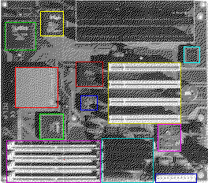

Previous
Next
TOC
Der Milan - ein TOS kompatibler Computer
Der Milan ist ein TOS-kompatibler Computer, der auf Basis eines
Intel/National Semiconductor-Chipsatzes und der Integration moderner
PCI-Technologie entwickelt wurde.
Ein Blick auf die Hauptplatine und das
Blockschaltbild

PC87308-VUL Super I/O Chip Litewinder
SB82371FB PCI ISA IDE XCELERATOR
PCI9060 PCI Bus Master Interface
ispLSI 1032E
ispLSI 1024
68901 MFP Chip
CPU 68040
Die 68040 CPU arbeitet mit 25MHz Taktfrequenz und einem integriertem
Burst-Cache. An Steckplätzen sind 4 PCI Steckplätze und 3 ISA Steck-
plätze vorhanden sowie 4 PS/2 SIMM EDO Ram Steckplätze für maximal
512 MB Hauptspeicher.
Weiterhin gibt es 2 IDE-Schnittstellen für maximal 4 IDE-Geräte,
welche Busmasterfähig sind und sorgen so für einen problemlosen
Massenspeicheranschluß welcher durch einen Standard Diskettenlauf-
werkssanschluß erweitert werden.
Der Druckeranschluß sowie 3 Serielle Schnittstellen sind standard-
mäßig vorhanden, sowie ein Standard-PC-Tastaturanschluß.
Das Falcon030 TOS 4.0x wurde für die Milan Hardware angepasst und
ist durch die Flashrom Technologie problemlos durch den Endanwender
updatebar, weiterhin besitzt der Milan natürlich eine Batteriege-
pufferte Echtzeituhr und Treiber für S3 Trio Grafikkarten sind vor-
handen.
Kapitel Der Milan - ein TOS kompatibler Computer, Seite 1